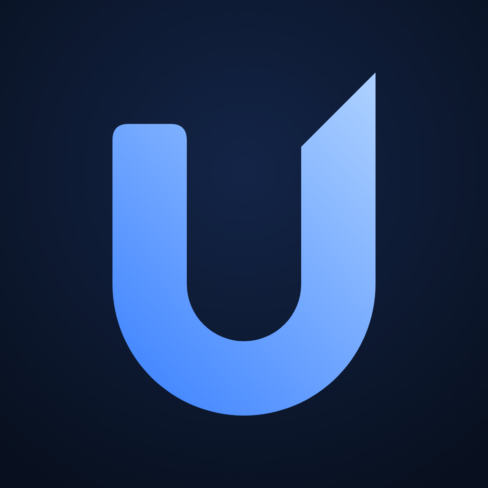

UltraMeTerms of Use
Effective November 23, 2026
Who I am
UltraMe is a sole proprietorship of Édouard Verreault, registered in Québec, Canada (NEQ 2282803842). For any question: edouard.verreault@outlook.com.
By creating an account or using the UltraMe app, you accept these terms. On iPhone, Apple’s standard license agreement also applies; on Android, Google Play’s terms.
What UltraMe does
UltraMe creates running training plans, from half marathon to ultra, on road and trail. Plans and answers from coach Kova are produced by artificial intelligence (Claude, by Anthropic) from your answers and check-ins, following training rules based on research.
Not medical advice
UltraMe is not a medical service. Plans don’t replace advice from a doctor or health professional. Before you start, especially if you have a health condition, see a professional. Stop and get checked if you feel pain, dizziness or discomfort. The app won’t create a plan if you report pain that hasn’t been assessed.
You run at your own risk: you remain responsible for your effort, your gear, your safety on road and trail, and weather conditions.
Minimum age
UltraMe is for people 18 and older.
Your account
You must give accurate information and keep your password confidential. An account is personal. You can delete your account at any time: Settings → Delete my account.
Subscription and free trial
- The subscription is sold and managed by Apple (App Store) or Google (Google Play). The price is shown before purchase.
- It renews automatically at the end of each period unless you cancel at least 24 hours before, in your Apple or Google account settings.
- At the end of a free trial, the subscription starts automatically if you haven’t cancelled.
- Refunds follow Apple’s or Google’s rules.
- Deleting your account doesn’t cancel your subscription.
Username, photo and leaderboard
Your username and profile photo may appear on the leaderboard, visible to other runners (can be turned off in settings). They must be respectful: no hateful, sexual, violent or misleading content, or content you don’t own. Usernames and photos are checked, and I may refuse or remove those that break these rules.
Garmin connection
Connecting Garmin Connect is optional. If you turn it on, Garmin’s terms also apply. You can remove it at any time in settings.
Prohibited use
You agree not to copy, resell or misuse the app, not to try to access other people’s data and not to disrupt the service. In case of abuse, I may suspend or close an account.
Ownership
The app, its content, the Kova mascot and the UltraMe brand belong to me or are used with permission. Exercise illustrations are by Docteur-Fitness, used with their permission. Your data stays yours; how it’s used is explained in the privacy policy.
Availability and liability
I do my best to keep the app working well, but it may contain errors or be interrupted, and AI answers can be inaccurate. To the extent permitted by law, including Québec’s Consumer Protection Act, I’m not liable for injuries or damages related to your training. Nothing in these terms limits the rights the law guarantees you.
Changes
I may change these terms. If a change is important, I’ll let you know in the app before it applies.
Governing law
These terms are governed by the laws of Québec and Canada.